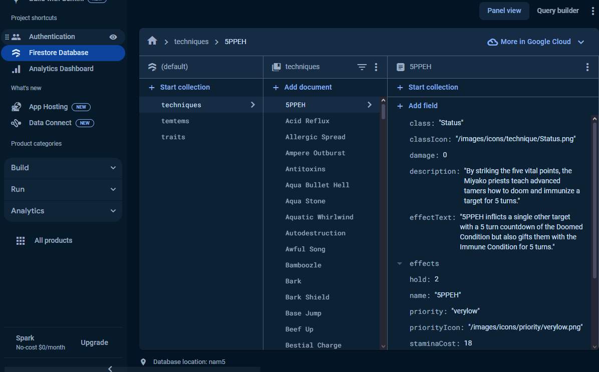
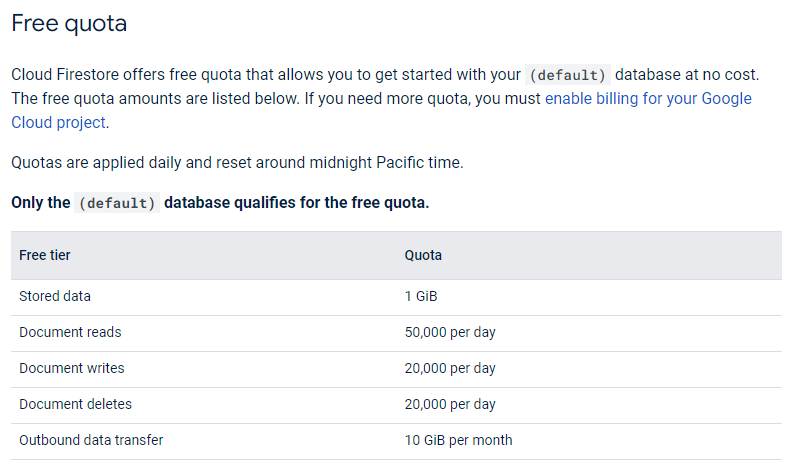

Hello to all! Hope you've been having a good day so far, and if not, hope the day improves with time. It's certainly been an eventful time for me these past few months, but I'm making the most of it as time passes!
Recently, I decided to delve more into setting up databases for personal use and practice. So far, I've tried out Firebase (here's their website) and MongoDB's Atlas (here's their website). I very much enjoyed using both of them, and I would think using MongoDB Atlas from scratch is definitely the easier alternative, especially if you're setting up something small for personal use or just practicing with data management at a smaller scale. However in this post, I intend on talking about Firebase a bit more in-depth, as I consider it to be the more complicated of the two. I do think my understanding of Firebase is lacking on the more complex aspects of it, but I do wish to explain at least some of the benefits with the basic stuff as best I can!
Firebase can be considered as a backend-as-a-service (BaaS) from Google that is able to host applications as well as manage a database along with a huge selection of tools to help simplify certain processes, increase security using authentication, manage logs and a whole lot more. This video by Fireship goes over a summary of the purpose behind Firebase much better than I can and would highly recommend giving it a look to have a better idea of its capabilities. For my purposes, I only used the database portion of it.

If anyone is interested in setting up their own Firebase database, I highly recommend going through this playlist for setting up Firebase with a ReactJS project. It goes through setting up a Firebase database from scratch along with loading up said database into your own ReactJS project. The reason I consider Firebase to be incredibly useful is its ability to update in realtime with the frontend itself. How this works is that with the setup complete, you gain access to what is in essence a Firebase object that you can now use to communicate with the actual database directly.
So let's say the Firebase database has some test data in it already. You can call a function that receives a snapshot of the database's current state, then retrieve the data from this snapshot. Then you use it like you would any other JSON object. It can be either for the whole database, a collection or just an individual entry in a collection. The great thing about this snapshot function is that any time the database updates, it will automatically send an updated snapshot to the frontend, allowing for data to be manipulated and shown in realtime.
Similar to a MongoDB database, Firebase stores its objects in a NoSQL format, which makes working with the objects pretty simple. Firebase also comes with its own pre-defined objects like collections, documents and queries that can be used to send, receive or update large quantities of data. Any time a change is made, the snapshot will update accordingly without having to do anything extra, which adds to the convenience.

Although Firebase can be incredibly useful to incorporate into a personal project, it does come with its set of limitations. The one that impacted me the most during my own testing was how much data you can send and receive at one time. For more details on that, here's the official Firebase quota page on their limits. Considering I was trying to pass data from one API into Firebase to get a better understanding of its functions, my read and write limits were met fairly quickly, despite it being 50k requests for reading and 20k for writing per day. Just goes to show what refreshing a page often with any change can do.
For me, Firebase was a great way to store small amounts of data and use them for my own purposes. I was trying to retrieve data from the Temtem API (here's a link to the API, in case anyone is curious) for the sake of creating my own version of a team builder for the game, similar to the Pokemon API. WIth it, I can pass the data in my own neatly organized fashion so I could specific portions of it once I get further into the project. There's still plenty more I can take advantage of with Firebase, but even just getting this starting point feels like a huge step in the right direction, which I am very happy with at the moment.
For any who read up to this point, I'd like to thank you for your time and patience! Hopefully the information here will get more people interested into Firebase as another database alternative for their own personal projects.